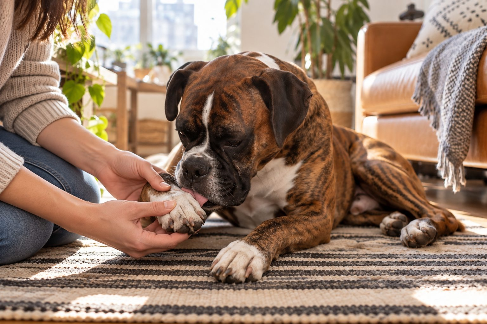

Check the paws for debris, cuts, redness, and swelling. Repeated or intense licking should be discussed with a veterinarian.
A dog may lick a paw briefly after a walk and then move on. Licking that becomes frequent, focused, or hard to interrupt deserves a closer look. The same behavior can have several possible causes, so the goal is to observe rather than guess.
Start with a careful paw check
Look between the toes and around each nail for a thorn, burr, small cut, cracked pad, or trapped dirt. Compare all four paws. One paw may suggest a local problem, while several paws may suggest a broader irritation. Do not dig into the skin or try to remove a deeply embedded object yourself.
If your dog is painful, limping, or the paw is swollen, arrange veterinary care. Take a photo and note when you first saw the licking; these details can help the veterinarian.
Start by noting exactly what is happening before you guess why. Is one paw involved or all four? Does the dog lick between the toes, the top of the foot, or a single nail? Look in good light for a seed, small stone, broken nail, redness, swelling, wet fur, or a sore. Compare the same place on the opposite paw. A focused problem after a walk can suggest a local irritation, while repeated licking of several feet can have a wider range of explanations. Neither pattern gives a diagnosis by itself.
If your dog allows it, gently separate the toes and inspect without digging into painful skin. Stop if the dog pulls away or growls. A short video of the behavior and clear photos in daylight can help the veterinarian understand a symptom that may pause during an appointment. Record whether the licking began after a new route, grooming product, floor cleaner, or season change. Keep the observations factual instead of labeling the problem as an allergy before it is assessed.
Possible reasons for repeated licking
Environmental irritation, allergies, skin inflammation, nail problems, and minor injuries are among the possibilities. Some dogs also lick when bored or anxious, but it is wise to rule out discomfort before treating the behavior as a habit.
Notice patterns: after grass walks, after bathing, at bedtime, or after a food change. A pattern is useful information, though it is not a diagnosis. Your veterinarian can determine the underlying cause and advise what to do next.
Repeated licking can make the skin wetter and more irritated, which then gives the dog another reason to lick. That cycle is why a symptom may grow even after the original trigger is gone. Injury, trapped debris, skin infection, parasites, and allergic disease are among the possibilities a veterinarian may consider. Stress can influence behavior too, but it should not be the default explanation when a paw is red, painful, or suddenly targeted. A behavioral label does not rule out physical discomfort.
Pay attention to the rest of the dog: ear scratching, recurrent skin trouble, limping, changes in appetite, or licking at other body sites may alter the clinical picture. Bring a timeline of these signs rather than making several unrelated product changes at once. If every shampoo, treat, and cleaning spray is changed together, it becomes difficult to learn what mattered. A veterinary exam can determine whether testing, treatment, or a structured trial is appropriate.

Safe steps at home
After walks, rinse or wipe paws with plain water when needed and dry carefully between the toes. Keep the walking area and bedding clean. Prevent licking from worsening an open sore by following your veterinarian’s advice about protection; do not apply human creams or essential oils without guidance.
A short diary of walks, products, weather, and licking episodes is often more helpful than switching several products at once. It also helps you judge whether the problem is getting better or worse.
At home, rinse away obvious surface dirt with lukewarm water and dry the paw thoroughly. Do not scrub raw skin or apply alcohol, essential oils, human antifungal cream, or leftover medication without veterinary guidance. These products can sting, be licked off, or mask a condition that needs a different treatment. If a loose burr is clearly visible and lifts away easily, remove it gently. Do not dig for a buried object or pull at material embedded near a nail.
Keep walks comfortable while waiting for advice. Avoid a surface that consistently triggers licking if you can, and check paws after each outing. A breathable barrier or cone may be recommended by a veterinarian to prevent further damage, but a tight bandage can trap moisture and create new problems. If the dog cannot settle, is chewing through skin, or has a swollen painful paw, contact a clinic promptly. Comfort and prevention of self-injury take priority over finding a home remedy.
What a paw observation can tell you
| Pattern | Useful response |
|---|---|
| Brief licking after a muddy walk | Inspect, rinse visible dirt, dry, and watch whether it stops. |
| Repeated focus on one toe or nail | Photograph the area and arrange a veterinary check if it continues. |
| Swelling, wound, limp, or marked pain | Seek prompt veterinary advice and avoid digging into the paw. |
A normal-looking surface does not rule out discomfort beneath the fur.
When to call the veterinarian
Seek an appointment for persistent licking, raw skin, odor, discharge, broken nails, or recurring episodes. Urgent care is appropriate for significant pain, major swelling, or an injury that will not stop bleeding. Effective treatment depends on the cause, which may not be visible from the surface.
A useful log takes one minute: record which foot, the time of day, the length of each episode, recent walks, and whether the skin looks different. Add photos taken at the same angle a day or two apart. A dog that licks only after grassy walks and improves after gentle rinsing offers different clues from a dog that licks one swollen toe all evening. The log will not diagnose the problem, but it helps the clinician see patterns that an office visit may miss.
If a treatment plan is given, ask what improvement should look like and when to check back. Some skin problems need follow-up even when the surface looks better. If the dog worsens, develops discharge, has a new limp, or cannot stop licking, contact the clinic rather than extending a home trial indefinitely. Repeated paw licking is a symptom worth understanding, not a habit to suppress at any cost.
Practical details
One paw or several?
A dog focused on a single foot may have a local issue such as a broken nail, trapped seed, or sore pad. Licking several paws can be associated with broader skin irritation, including environmental triggers. These patterns are clues, not diagnoses. Compare the paws carefully without digging into the skin. Look for uneven swelling, a new odor, damp fur, or a spot that seems unusually warm or painful.
Take a short video if the behavior occurs mainly at certain times. A photo of the paw today and another a day later can show whether redness is spreading. Note walks through long grass, road salt exposure, new floor cleaners, and recent grooming products. The veterinarian can use this history to decide what examination or tests are appropriate.
Choose the next step from what you see
Wipe away visible dirt, dry the toes, and observe whether the behavior stops.
Photograph the paw, note the pattern, and arrange a veterinary appointment.
Avoid home creams and contact a veterinarian promptly for an examination.
Seek urgent veterinary care, especially if bleeding continues or the dog cannot bear weight.
Why licking can become its own problem
Even if the original trigger is small, constant moisture and friction may irritate the skin further. That can create a cycle in which the paw becomes more uncomfortable and the dog licks more. Covering a paw without guidance may trap moisture, while a household cream may be swallowed when the dog licks it off. Ask your veterinarian how to protect the paw if the skin has become raw.
Do not assume boredom is the explanation just because licking happens in the evening. Pain or itch can also become more noticeable when a dog is resting. Provide normal exercise and enrichment, but prioritize a medical assessment when the licking is persistent, focused, or associated with visible changes.
A practical observation log
Write down which paw is involved, when licking starts, how long it lasts, and what the dog was doing beforehand. Include bathing, walks, new foods, parasite prevention, and any cleaning product used on floors. A short, accurate log is more useful than changing shampoo, diet, and bedding all at once, because multiple changes make it difficult to identify what helped.
If the behavior stops after a single muddy walk, continue normal paw checks. If it returns repeatedly, book an appointment even when the paw looks mostly normal. A veterinarian can determine the underlying cause and advise treatment. Seek urgent help for severe pain, fast swelling, or a significant wound.
Consider an ordinary example: a dog licks one front foot after a long park walk. The owner finds a little grit, rinses it, and the licking stops. That brief episode differs from a dog that returns to the same foot every night for a week, especially if the fur becomes stained or the toes smell unusual. The second pattern warrants a call even when the dog still plays normally. Dogs can compensate for discomfort and may show few obvious signs beyond repeated grooming.
If the paws appear normal but the behavior persists, a veterinary assessment is still useful. The issue may be subtle, intermittent, or located under fur. Share any recent parasite prevention, bathing products, diet changes, or household cleaners, but do not assume one must be responsible. After medical causes are assessed, a qualified behavior professional may help with any remaining repetitive behavior. This sequence avoids dismissing pain while still considering the full picture.
Be careful with the assumption that a normal-looking paw is a healthy paw. Hair can hide redness between toes, and a nail or pad injury may be hard to see without proper light. If the dog repeatedly targets one spot, keeps waking to lick, or becomes protective of the foot, arrange an examination. Tell the veterinarian whether the dog also shakes its ears, rubs its face, or scratches elsewhere. These associations can help direct the assessment. Do not start a restrictive diet or several supplements because an internet list suggested an allergy; a structured diagnostic plan is more informative.
If treatment is prescribed, ask whether walks, bathing, or a protective barrier should change while the skin heals. Follow instructions for cleaning and drying carefully. A paw kept moist under an improvised wrap may worsen even when the dog licks less. Take follow-up photos from the same angle and share them if the clinic requests. Improvement means less discomfort and healing skin, not merely less visible licking because access was blocked. A dog that still seems painful needs follow-up.
Keep a useful paw licking record
A short record can reveal whether licking follows walks, wet grass, floor cleaning, meals, or a particular time of day. Note which paws are involved and photograph any redness in the same light each day. One sore paw suggests a different line of questions from several itchy paws. Also check between the toes for debris, a broken nail, or swelling without digging into painful skin.
While you wait for advice, rinse off obvious dirt with plain water and dry the spaces between the toes gently. Avoid repeatedly applying new creams or changing several products at once, because that makes a reaction harder to identify. A persistent pattern, broken skin, odor, or limping deserves a veterinary assessment. Bring your observations and photographs so the visit can focus on the likely triggers and the dog's comfort.
Continue exploring
For a broader routine, read How Often Should You Bathe Your Dog?, How to Clean Your Dog's Ears Safely at Home, and How to Fit a Dog Harness for Comfortable Walks.
Frequently Asked Questions
Is it normal for a dog to lick its paws after a walk?
Brief cleaning can be normal. Frequent or intense licking, especially with redness, deserves attention.
Can allergies make a dog lick its paws?
They are one possibility, but injury, irritants, and other skin problems can look similar.
Should I put ointment on my dog's paw?
Ask your veterinarian before using a product; dogs may lick it off and some ingredients are unsuitable.
Editorial references
These resources informed the general guidance in this article. They do not replace advice tailored to your pet.
This guide offers general information. Your pet’s age, health, and history may call for a different plan. For medical concerns, ask your veterinarian.